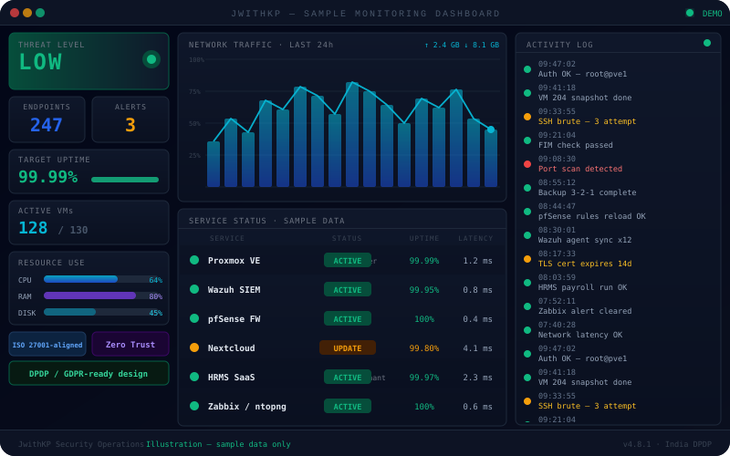
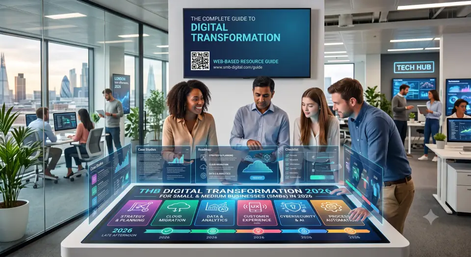

Cloud Architecture That Scales With You
Hybrid and multi-region cloud environments on Azure and AWS, designed for high availability as you grow — not just on launch day.
Explore ArchitectureStill paying more every year for the same VMware or SIEM license? We migrate, secure, and run your infrastructure on proven open-source platforms instead — often cutting licensing costs by up to 70%, without giving up the reliability your business depends on.


Fixed-price starter pilot
First response on every enquiry
You keep every config and runbook
Estimated licensing savings
Works With the Tools You Already Run
From migrating your first server off VMware to ongoing threat monitoring — we design, deploy, and manage the systems your business depends on.
Hybrid and multi-region cloud environments on Azure and AWS, designed for high availability as you grow — not just on launch day.
Explore ArchitectureWe move production VM clusters to Proxmox VE with Ceph HA storage — same performance, a cutover planned to avoid downtime, and up to 70% less spent on hypervisor licensing.
Calculate Migration SavingsWazuh SIEM watches every endpoint it covers, with automated response rules and ISO 27001-ready audit trails built in from day one.
Review Monitoring DetailsHigh-availability pfSense firewalls and WireGuard mesh VPNs across every site, with micro-segmented access so a breach in one place stays there.
Inspect Network BlueprintAir-gapped, immutable backup vaults on Proxmox Backup Server and Veeam — built so you can recover quickly, even from a total encryption attack.
Schedule DR AssessmentPF, ESI, and TDS calculated automatically, synced to biometric attendance — one platform for the whole employee lifecycle, not a spreadsheet.
Launch HRMS PlatformHands-on engineering, open-source cost efficiency, and support terms agreed in writing.
JwithKP is a new, founder-led practice. The person who scopes your project is the one who designs, builds, and supports it — no hand-offs, no account managers.
Wazuh gives you real-time detection and automated active response on every endpoint it covers. We tune the rules with you so alerts are worth reading.
No generic SLA copy-pasted from a brochure. Response times and support hours are agreed in writing for each project, before any work starts.
Drop the recurring hypervisor and SIEM license fees. Use the calculator for a first estimate, then we refine it against your real environment.
No surprise change orders — here's what happens, in order.
We audit what you're running today — stack, licenses, and exposure.
You get a concrete target environment and a migration roadmap.
Phased cutover — zero data loss, no business interruption.
We tune and harden what we built until it's boringly reliable.
Ongoing monitoring and support, with a direct line to us.
Not resold licenses — platforms we maintain day to day.
Complete multi-tenant platform managing recruitment, employee lifecycles, attendance, geo-fenced checking, biometric device sync, and Indian statutory payroll (PF, ESI, TDS) with automated payslip dispatch.
Launch HRMS DemoNeed a CMS, a cloud management console, or an internal automation tool that doesn't exist yet? We design and build it around your actual workflow, not a generic template.
Discuss Your ProjectInfrastructure needs are similar across sectors — see the full breakdown by industry.
JwithKP is a new practice, so these are illustrative scenarios — not past client results. Savings are estimates, not guarantees.
Migration blueprints and technology assessments from our own projects.

Find answers to common technical queries about JwithKP IT designs and applications.